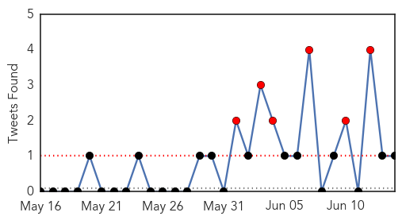

30 Day Trends
Web: 24 alerts, 2 warnings
Twitter: 6 alerts, 0 warnings
Top Articles:
- 1.000
- MERS Forces Limited Operations at Seoul Hospital
- 1.000
- Nigeria on alert over Middle East respiratory syndrome
- 1.000
- 14th person dies of MERS in S. Korea; 2 hospitals closed – The Korea Times
- 1.000
- S. Korea to See More MERS Cases
- 1.000
- Experts expect more MERS cases, downplay chance of pandemic
- 1.000
- Filipino female nurse PH’s 1st MERS case; DOH tracking contacts
- 0.999
- Health officials: MERS virus not spreading outside South Korean hospitals
- 0.999
- MERS may have reached Europe as death toll hits 15 since South Korea diagnosis
- 0.999
- South Korea hospital 'is source of many Mers cases'
- 0.999
- Experts downplay MERS crisis; S. Korea records 14th death
- 0.999
- MERS: Seoul hospital at centre of South Korean outbreak suspends services; death toll now at 15
- 0.999
- MERS virus claims 15 lives in South Korea
- 0.999
- MERS panic ‘unnecesary’
- 0.999
- Korean ‘MERS epicenter’ suspends service
- 0.999
- The World Health Organization Concerned About Propagation of the Coronavirus in Korea
- 0.998
- WHO calls emergency meeting on "large, complex" S. Korea MERS outbreak
- 0.998
- Kingdom South Korea see no MERS letup
- 0.998
- [Editorial] Info sharing crucial
- 0.998
- New MERS death reported in South Korea
- 0.998
- New #MERS death reported in South Korea
- 0.998
- (7th LD) WHO says MERS in S. Korea 'large and complex'
- 0.998
- Hospital at center of South Korea's MERS outbreak suspends services; 7 new cases
- 0.997
- 6th person dies of MERS virus in South Korea - Northwest Asian Weekly
- 0.997
- South Korea Reports Seven New Cases of MERS, Brings Total to 145
- 0.996
- 'MERS-CoV' Infection
- 0.996
- WHO: MERS-Cov has not mutated, but Korea outbreak seen to worsen
- 0.996
- 15th person dies from MERS in S. Korea, 7 new cases reported- Nikkei Asian Review
- 0.995
- Another Pinoy with MERS in Riyadh
- 0.995
- South Korea Confirms Seven More MERS Cases as Economy Suffers
- 0.993
- ‘Woman who escaped from Miri Hospital not MERS-CoV suspect’ – BorneoPost Online
- 0.988
- The Manila Times Online
- 0.981
- KUAM.com-KUAM News: On Air. Online. On Demand.
- 0.977
- Embassy in Riyadh says Pinoy has MERS virus
- 0.976
- Hospitals in PH unprepared for possible outbreak
- 0.972
- More tests needed to rule out MERS for S.Korean man in Slovakia
- 0.967
- S. Korea reports 11th death from MERS outbreak[2]- Chinadaily.com.cn
- 0.964
- Tests show South Korean in Slovakia probably does not have MERS
- 0.959
- Tests show South Korean in Slovakia probably does not have MERS
- 0.934
- Joint team faults gov’t information handling-INSIDE Korea JoongAng Daily
- 0.923
- China's Aviation Regulator Orders Enhanced MERS Control
- 0.890
- Hospitals told to be on alert vs MERS-CoV
- 0.859
- Slovakian hospital tests South Korean man in suspected Mers case
- 0.791
- Officials and traders in Suvarnabhumi Airport meet to ensure synchronized action against MERS
Top Tweets:
- 0.643
- WHO Director-General is convening the 9th Meeting of the Emergency Committee on MERS-CoV under International Health Regulations on 16 June
Web/News Articles

Tweets
Article Locations

Article Confidences